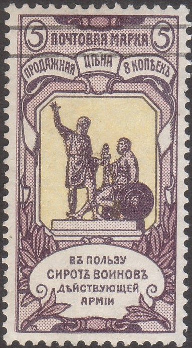
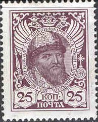
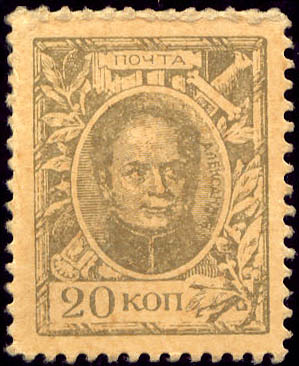

Return To Catalogue - Russia overview
Note: on my website many of the
pictures can not be seen! They are of course present in the
catalogue;
contact me if you want to purchase the catalogue.
3 (+3) k brown, red and green (monument of admiral Kornilof) 5 (+3) k violet, lilac and yellow (monument at Moscow) 7 (+3) k blue and red (Statue of Peter the Great) 10 (+3) k blue and yellow (Kremlin)
These stamps exist with various perforations.
Value of the stamps |
|||
vc = very common c = common * = not so common ** = uncommon |
*** = very uncommon R = rare RR = very rare RRR = extremely rare |
||
| Value | Unused | Used | Remarks |
| 3 k | ** | ** | |
| 5 k | ** | ** | |
| 7 k | ** | ** | |
| 10 k | ** | ** | |



1 k orange (Peter the Great) 2 k green (Alexander II) 3 k red (Alexander III) 4 k red (Peter the Great) 7 k brown (Nicholas II) 10 k blue (Nicholas II) 14 k green (Catherine II) 15 k brown (Nicholas I) 20 k green (Alexander I) 25 k lilac (Alexei Michaelovich) 35 k violet and green (Paul I) 50 k brown and grey (Elisabeth) 70 k green and brown (Michael Feodorovich) 1 R green (Kremlin) 2 R brown (Winterpalace in St.Petersburg) 3 R violet (Castle of the Romanovs) 5 R brown (Nicholas II) Surcharged (1916)


'10' on 7 k brown '20' on 14 k green
All the above stamps are perforated 13 1/2.
Value of the stamps |
|||
vc = very common c = common * = not so common ** = uncommon |
*** = very uncommon R = rare RR = very rare RRR = extremely rare |
||
| Value | Unused | Used | Remarks |
| 1 k | c | vc | |
| 2 k | c | vc | |
| 3 k | c | vc | |
| 4 k | c | c | |
| 7 k | c | vc | |
| 10 k | c | c | |
| 14 k | * | c | |
| 15 k | * | c | |
| 20 k | * | c | |
| 25 k | * | * | |
| 35 k | * | * | |
| 50 k | * | * | |
| 70 k | * | * | |
| 1 R | ** | * | |
| 2 R | ** | * | |
| 3 R | ** | ** | |
| 5 R | ** | *** | |
| Surcharged | |||
| 10 on 7 k | c | c | |
| 20 on 14 k | c | c | |
Some of these stamps exist on very thick paper with an impression at the back side, they were primarily used as money and issued without gum.


With eagle and text on the backside 10 k blue (1915) 15 k brown (1915) 20 k green (1915) '1' on 1 k orange (1916) '2' on 2 k green (1916) 3 k red (1916)
Value of the stamps |
|||
vc = very common c = common * = not so common ** = uncommon |
*** = very uncommon R = rare RR = very rare RRR = extremely rare |
||
| Value | Unused | Used | Remarks |
| On thick paper, text on back | |||
| 10 k | c | R | |
| 15 k | c | R | |
| 20 k | c | R | |
| 1 on 1 k | c | * | |
| 2 on 2 k | c | * | |
| 3 k | c | * | |
These stamps exist surcharged in 'PARA' or 'PIASTRES' for use in Turkey.
Provisional overprints exist with 2 crossed swords (could be a bogus issue), one stamp always bears 1/4 of the overprint, I have only seen this overprint in red, it also exists on postcards. Example of this overprint:
I've been told that this is a postal forgery, I have no further information:

(Postal forgery?)


{kind=link}
{kind=link}
{kind=link}
{kind=link}